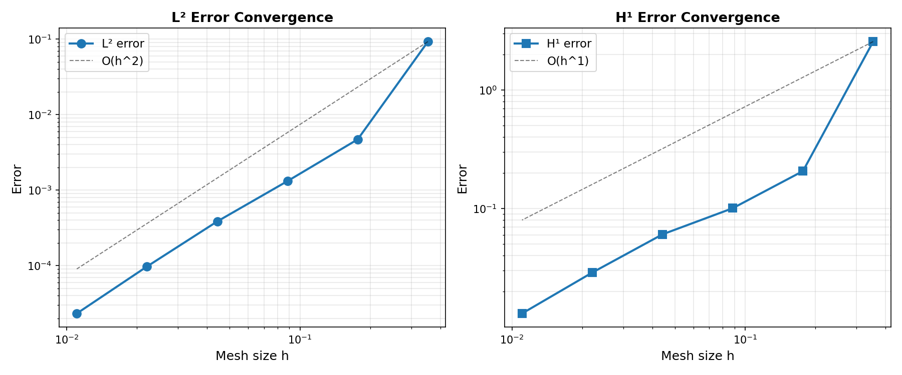

Poisson Convergence Study: Unit Square with Circular Hole
This demo is implemented in demo_poisson_convergence.py. It
illustrates:
How to perform a convergence study for the Poisson problem on an unfitted domain.
How to use Nitsche’s method for imposing boundary conditions weakly.
How to compute and analyze L² and H¹ error norms.
How to visualize convergence rates for different mesh refinements.
Problem Definition
We consider the Poisson problem on a domain \(\Omega \subset \mathbb{R}^2\) that is the unit square \([0,1]^2\) with a circular hole. The domain is defined implicitly as the complement of a disk:
where \(D_R(\mathbf{c})\) is a disk of radius \(R = 0.2\) centered at \(\mathbf{c} = (0.5, 0.5)\). The Poisson problem reads:
where \(\Gamma_D\) consists of the outer boundary (the four edges of the square) and \(\Gamma_N\) is the unfitted boundary (the circular hole).
Boundary Conditions
We have two options for imposing boundary conditions on the unfitted boundary \(\Gamma_N\):
Neumann boundary conditions: Impose \(\nabla u \cdot \mathbf{n} = g\) directly in the linear form.
Nitsche’s method: Weakly impose Dirichlet boundary conditions \(u = u_D\) on \(\Gamma_N\) using Nitsche’s method, which provides a consistent, symmetric, and stable formulation.
Nitsche’s Method
When using Nitsche’s method, the bilinear form is modified to include boundary terms:
where \(\beta > 0\) is a stabilization parameter (chosen here as \(\beta = 6k^2\) for polynomials of degree \(k\)), and \(h\) is the mesh size. The first boundary term ensures consistency, the second, symmetry, and the third provides stability.
Manufactured Solutions
The demo supports multiple manufactured solutions for different test cases. By default, we use:
which yields a non-zero right-hand side \(f = -\Delta u = 2\pi^2\sin(\pi x)\sin(\pi y)\) and non-zero Neumann boundary conditions on \(\Gamma_N\).
Other available solutions include:
Trigonometric functions with different combinations
Radial solutions that satisfy specific boundary conditions
Solutions with zero forcing terms or zero Neumann data
Convergence Analysis
For a finite element solution \(u_h\) using polynomial basis functions of degree \(k\), the expected convergence rates are:
L² error: \(\|u - u_h\|_{L^2(\Omega)} = \mathcal{O}(h^{k+1})\)
H¹ error: \(\|u - u_h\|_{H^1(\Omega)} = \mathcal{O}(h^k)\)
where \(h\) is the characteristic mesh size. These rates hold for smooth solutions when the mesh is sufficiently refined.
Implementation
Modules import
First we import the necessary modules:
from pathlib import Path
from mpi4py import MPI
import dolfinx.fem
import dolfinx.fem.petsc
import dolfinx.io
import numpy as np
import ufl
import qugar
import qugar.impl
from qugar.dolfinx import ds_bdry_unf, mapped_normal
from qugar.mesh import create_unfitted_impl_Cartesian_mesh
from qugar.utils import has_FEniCSx, has_PETSc
try:
import matplotlib.pyplot as plt
has_matplotlib = True
except ImportError:
has_matplotlib = False
if not has_FEniCSx:
raise ValueError("FEniCSx installation not found, required for this demo.")
if not has_PETSc:
raise ValueError("petsc4py installation not found, required for this demo.")
Domain Definition
We define the domain as the unit square with a circular hole:
xmin = np.array([0.0, 0.0], dtype=np.float64)
xmax = np.array([1.0, 1.0], dtype=np.float64)
center = (xmin + xmax) / 2.0
R = 0.2
dtype = np.float64
impl_func = qugar.impl.create_negative(qugar.impl.create_disk(R, center=center))
Boundary Condition Method
Choose between Nitsche’s method (True) or Neumann boundary (False) conditions:
use_Nistche = True
Analytical Solution
Define the exact solution and select which one to use:
solution_id = 0 # ufl.sin(ufl.pi * x[0]) * ufl.sin(ufl.pi * x[1]) # f!=0, Neumann!=0
# solution_id = 1 # ufl.cos(ufl.pi * x[0]) * ufl.cos(ufl.pi * x[1]) # f!=0, Neumann!=0
# solution_id = 2 # ufl.exp(x[0]) * ufl.sin(x[1]) # f=0, Neumann!=0
# solution_id = 3 # (r - R) ** 2 # f!=0, Neumann=0.
# solution_id = 4 # -R * ufl.ln(r) # f=0, Neumann=1.
# solution_id = 5 # (r - R) ** 2 - R * ufl.ln(r) # f!=0, Neumann=1.
def u_exact_expr(x):
"""Exact displacement solution as a UFL expression."""
def r():
return ufl.sqrt((x[0] - center[0]) ** 2 + (x[1] - center[1]) ** 2)
if solution_id == 0:
return ufl.sin(ufl.pi * x[0]) * ufl.sin(ufl.pi * x[1]) # f!=0, Neumann!=0
elif solution_id == 1:
return ufl.cos(ufl.pi * x[0]) * ufl.cos(ufl.pi * x[1]) # f!=0, Neumann!=0
elif solution_id == 2:
return ufl.exp(x[0]) * ufl.sin(x[1]) # f=0, Neumann!=0
elif solution_id == 3:
return (r() - R) ** 2 # f!=0, Neumann=0.
elif solution_id == 4:
return -R * ufl.ln(r()) # f=0, Neumann=1.
elif solution_id == 5:
return (r() - R) ** 2 - R * ufl.ln(r()) # f!=0, Neumann=1.
else:
raise ValueError(f"Invalid solution id: {solution_id}")
def u_exact_numpy(x):
"""Exact displacement solution as a numpy function for error computation."""
def r():
return np.sqrt(np.pow(x[0] - center[0], 2) + np.pow(x[1] - center[1], 2))
if solution_id == 0:
return np.sin(np.pi * x[0]) * np.sin(np.pi * x[1])
elif solution_id == 1:
return np.cos(np.pi * x[0]) * np.cos(np.pi * x[1])
elif solution_id == 2:
return np.exp(x[0]) * np.sin(x[1])
elif solution_id == 3:
return np.pow(r() - R, 2) # f != 0, Neumann=0.
elif solution_id == 4:
return -R * np.log(r()) # f = 0, Neumann=1.
elif solution_id == 5:
return np.pow(r() - R, 2) - R * np.log(r()) # f != 0, Neumann=1.
else:
raise ValueError(f"Invalid solution id: {solution_id}")
Boundary DOF Location
Function to locate degrees of freedom on the outer boundary facets:
def locate_boundary_dofs(unf_mesh, V):
dim = unf_mesh.topology.dim
# Left boundary (x=-0.5)
left_facets = dolfinx.mesh.locate_entities_boundary(
unf_mesh, dim=(dim - 1), marker=lambda x: np.isclose(x[0], xmin[0])
)
left_dofs = dolfinx.fem.locate_dofs_topological(V=V, entity_dim=1, entities=left_facets)
# Bottom boundary (y=-0.5)
bottom_facets = dolfinx.mesh.locate_entities_boundary(
unf_mesh, dim=(dim - 1), marker=lambda x: np.isclose(x[1], xmin[1])
)
bottom_dofs = dolfinx.fem.locate_dofs_topological(V=V, entity_dim=1, entities=bottom_facets)
# Right boundary (x=0.5)
right_facets = dolfinx.mesh.locate_entities_boundary(
unf_mesh, dim=(dim - 1), marker=lambda x: np.isclose(x[0], xmax[0])
)
right_dofs = dolfinx.fem.locate_dofs_topological(V=V, entity_dim=1, entities=right_facets)
# Top boundary (y=0.5)
top_facets = dolfinx.mesh.locate_entities_boundary(
unf_mesh, dim=(dim - 1), marker=lambda x: np.isclose(x[1], xmax[1])
)
top_dofs = dolfinx.fem.locate_dofs_topological(V=V, entity_dim=1, entities=top_facets)
return left_dofs, right_dofs, bottom_dofs, top_dofs
Solve Function
Function to solve the Poisson problem for a given mesh resolution:
def solve_poisson(n_cells, degree=1):
unf_mesh = create_unfitted_impl_Cartesian_mesh(
MPI.COMM_WORLD,
impl_func,
n_cells,
xmin,
xmax,
exclude_empty_cells=True,
dtype=dtype,
)
V = dolfinx.fem.functionspace(unf_mesh, ("Lagrange", degree))
u, v = ufl.TrialFunction(V), ufl.TestFunction(V)
x = ufl.SpatialCoordinate(unf_mesh)
u_exact = u_exact_expr(x)
gradu_exact = ufl.grad(u_exact)
f_exact = -ufl.div(gradu_exact)
u_D = dolfinx.fem.Function(V)
u_D.interpolate(lambda x: u_exact_numpy(x))
bcs = [dolfinx.fem.dirichletbc(u_D, dofs) for dofs in locate_boundary_dofs(unf_mesh, V)]
dx = ufl.dx(domain=unf_mesh)
n_unf = mapped_normal(unf_mesh)
ds_unf = ds_bdry_unf(domain=unf_mesh)
# Bilinear form: a(u,v) = ∫_Ω ∇u·∇v dx
a = ufl.inner(ufl.grad(u), ufl.grad(v)) * dx
if use_Nistche:
# Bilinear form: a(u,v) = ∫_Ω ∇u·∇v dx- ∫_Γ_N ∇u·n * v ds
# - ∫_Γ_N u * ∇v·n ds + β/h ∫_Γ_N u v ds
h = np.linalg.norm(xmax - xmin) / n_cells
beta = 6 * degree**2
gradu_n = ufl.dot(ufl.grad(u), n_unf)
gradv_n = ufl.dot(ufl.grad(v), n_unf)
a -= gradu_n * v * ds_unf # consistency
a -= u * gradv_n * ds_unf # symmetry
a += beta / h * u * v * ds_unf # stability
# Linear form: L(v) = ∫_Ω f v dx + ...
L = ufl.dot(f_exact, v) * dx
if use_Nistche:
# Linear form: L(v) = ∫_Ω f v dx - ∫_Γ_N u_exact ∇v·n ds + β/h ∫_Γ_N u_exact * v ds
L += beta / h * u_exact * v * ds_unf
L -= u_exact * gradv_n * ds_unf
else: # Neumann
# Linear form: L(v) = ∫_Ω f v dx + ∫_Γ_N ∇(u_exact)·n v ds
gradu_exact_n = ufl.dot(gradu_exact, n_unf)
L += ufl.dot(gradu_exact_n, v) * ds_unf
petsc_options = {
"ksp_type": "preonly",
"pc_type": "cholesky",
"ksp_diagonal_scale": True, # Jacobi preconditioner
}
problem = qugar.dolfinx.LinearProblem(a, L, bcs=bcs, petsc_options=petsc_options)
uh = problem.solve()
return unf_mesh, uh, V
Error Computation
Function to compute L² and H¹ error norms:
def compute_l2_h1_errors(uh, unf_mesh):
"""Compute L² error: ||u_h - u_exact||_L² and H¹ error: ||u_h - u_exact||_H¹"""
x = ufl.SpatialCoordinate(unf_mesh)
u_exact = u_exact_expr(x)
error = uh - u_exact
grad_error = ufl.grad(error)
dx = ufl.dx(domain=unf_mesh)
# Compute L² norm using appropriate quadrature
L2_error_form = error * error * dx
L2_error_form = qugar.dolfinx.form_custom(L2_error_form)
L2_error = np.sqrt(
dolfinx.fem.assemble_scalar(L2_error_form, coeffs=L2_error_form.pack_coefficients())
)
# H¹ semi norm = grad L²
semi_H1_error_form = ufl.dot(grad_error, grad_error) * dx
semi_H1_error_form = qugar.dolfinx.form_custom(semi_H1_error_form)
semi_H1_error = np.sqrt(
dolfinx.fem.assemble_scalar(
semi_H1_error_form, coeffs=semi_H1_error_form.pack_coefficients()
)
)
# H¹ norm = L² + grad L²
H1_error = L2_error + semi_H1_error
return L2_error, H1_error
Visualization
Function to visualize the solution on a reparameterized mesh:
def visualize_solution(mesh, uh, V, name, rep_degree=3):
"""Visualize the solution."""
reparam = qugar.reparam.create_reparam_mesh(mesh, degree=rep_degree, levelset=False)
rep_mesh = reparam.create_mesh()
rep_mesh_wb = reparam.create_mesh(wirebasket=True)
dim = mesh.topology.dim
Vrep = dolfinx.fem.functionspace(rep_mesh, ("CG", rep_degree, (dim,)))
Vrep_wb = dolfinx.fem.functionspace(rep_mesh_wb, ("CG", rep_degree, (dim,)))
interp_data_vec = qugar.reparam.create_interpolation_data(Vrep, V)
uh_rep = dolfinx.fem.Function(Vrep)
uh_rep.interpolate_nonmatching(uh, *interp_data_vec)
uh_rep.name = "solution"
interp_data_wb = qugar.reparam.create_interpolation_data(Vrep_wb, V)
uh_rep_wb = dolfinx.fem.Function(Vrep_wb)
uh_rep_wb.interpolate_nonmatching(uh, *interp_data_wb)
uh_rep_wb.name = "solution_wirebasket"
results_folder = Path("results")
results_folder.mkdir(exist_ok=True, parents=True)
filename = results_folder / name
with dolfinx.io.VTKFile(rep_mesh.comm, filename.with_suffix(".pvd"), "w") as vtk:
vtk.write_function(uh_rep)
vtk.write_function(uh_rep_wb)
Convergence Study
Perform the convergence study by solving on a sequence of refined meshes:
mesh_sizes = [4, 8, 16, 32, 64, 128] # Cells per direction
fe_degree = 1
print("\n" + "=" * 70)
print("CONVERGENCE STUDY - Linear Poisson on Unit Square with Hole")
print("=" * 70)
print(f"FE degree: {fe_degree}")
print(f"Mesh sizes (cells/direction): {mesh_sizes}")
print("-" * 70)
results = {
"mesh_size": [],
"h": [],
"n_dofs": [],
"L2_error": [],
"H1_error": [],
"L2_rate": [],
"H1_rate": [],
}
prev_L2 = None
prev_H1 = None
prev_h = None
for n_cells in mesh_sizes:
mesh, uh, V = solve_poisson(n_cells, degree=fe_degree)
h = np.linalg.norm(xmax - xmin) / n_cells
n_dofs = V.dofmap.index_map.size_global
L2_error, H1_error = compute_l2_h1_errors(uh, mesh)
visualize = True
if visualize:
visualize_solution(mesh, uh, V, f"demo_poisson_plate_with_hole_{n_cells}")
if prev_L2 is not None:
L2_rate = np.log(prev_L2 / L2_error) / np.log(prev_h / h)
H1_rate = np.log(prev_H1 / H1_error) / np.log(prev_h / h)
else:
L2_rate = None
H1_rate = None
results["mesh_size"].append(n_cells)
results["h"].append(h)
results["n_dofs"].append(n_dofs)
results["L2_error"].append(L2_error)
results["H1_error"].append(H1_error)
results["L2_rate"].append(L2_rate)
results["H1_rate"].append(H1_rate)
L2_rate_str = f"{L2_rate:.2f}" if L2_rate is not None else " - "
H1_rate_str = f"{H1_rate:.2f}" if H1_rate is not None else " - "
print(
f"n_cells={n_cells:2d} | h={h:.4f} | DOFs={n_dofs:6d} | "
f"L² error={L2_error:.2e} (rate: {L2_rate_str}) | "
f"H¹ error={H1_error:.2e} (rate: {H1_rate_str})"
)
prev_L2 = L2_error
prev_H1 = H1_error
prev_h = h
print("=" * 70)
print("\nExpected convergence rates:")
print(f" L²: O(h^{fe_degree + 1})")
print(f" H¹: O(h^{fe_degree})")
Plot Convergence
Generate convergence plots if matplotlib is available:
if has_matplotlib:
fig, (ax1, ax2) = plt.subplots(1, 2, figsize=(12, 5))
h_array = np.array(results["h"])
L2_array = np.array(results["L2_error"])
H1_array = np.array(results["H1_error"])
ax1.loglog(h_array, L2_array, "o-", linewidth=2, markersize=8, label="L² error")
ref_h = h_array[0]
ref_L2 = L2_array[0]
ax1.loglog(
h_array,
ref_L2 * (h_array / ref_h) ** (fe_degree + 1),
"k--",
linewidth=1,
alpha=0.5,
label=f"O(h^{fe_degree + 1})",
)
ax1.set_xlabel("Mesh size h", fontsize=12)
ax1.set_ylabel("Error", fontsize=12)
ax1.set_title("L² Error Convergence", fontsize=13, fontweight="bold")
ax1.grid(True, which="both", alpha=0.3)
ax1.legend(fontsize=11)
ax2.loglog(h_array, H1_array, "s-", linewidth=2, markersize=8, label="H¹ error")
ref_H1 = H1_array[0]
ax2.loglog(
h_array,
ref_H1 * (h_array / ref_h) ** (fe_degree),
"k--",
linewidth=1,
alpha=0.5,
label=f"O(h^{fe_degree})",
)
ax2.set_xlabel("Mesh size h", fontsize=12)
ax2.set_ylabel("Error", fontsize=12)
ax2.set_title("H¹ Error Convergence", fontsize=13, fontweight="bold")
ax2.grid(True, which="both", alpha=0.3)
ax2.legend(fontsize=11)
plt.tight_layout()
visualize = False
results_folder = Path("results")
results_folder.mkdir(exist_ok=True, parents=True)
plt.savefig(results_folder / "demo_poisson_convergence.png", dpi=150)
conv_plot = results_folder / "demo_poisson_convergence.png"
print(f"\nConvergence plot saved to: {conv_plot}")
plt.show()
Summary
Print summary of convergence results:
print("\nSummary of Results:")
print(f"Number of mesh refinements: {len(mesh_sizes)}")
print(f"Final mesh size: {mesh_sizes[-1]} × {mesh_sizes[-1]} elements")
print(f"Total DOFs in final solve: {results['n_dofs'][-1]}")
print(f"Final L² error: {results['L2_error'][-1]:.2e}")
print(f"Final H¹ error: {results['H1_error'][-1]:.2e}")
if results["L2_rate"][-1] is not None:
print("\nAverage convergence rates:")
# avg_L2_rate = np.mean([r for r in results["L2_rate"][1:] if r is not None])
# avg_H1_rate = np.mean([r for r in results["H1_rate"][1:] if r is not None])
avg_L2_rate = np.mean([r for r in results["L2_rate"][-2:] if r is not None])
avg_H1_rate = np.mean([r for r in results["H1_rate"][-2:] if r is not None])
print(f" L²: {avg_L2_rate:.2f} (expected: {fe_degree + 1})")
print(f" H¹: {avg_H1_rate:.2f} (expected: {fe_degree})")
|
Convergence plot |
|---|
 |